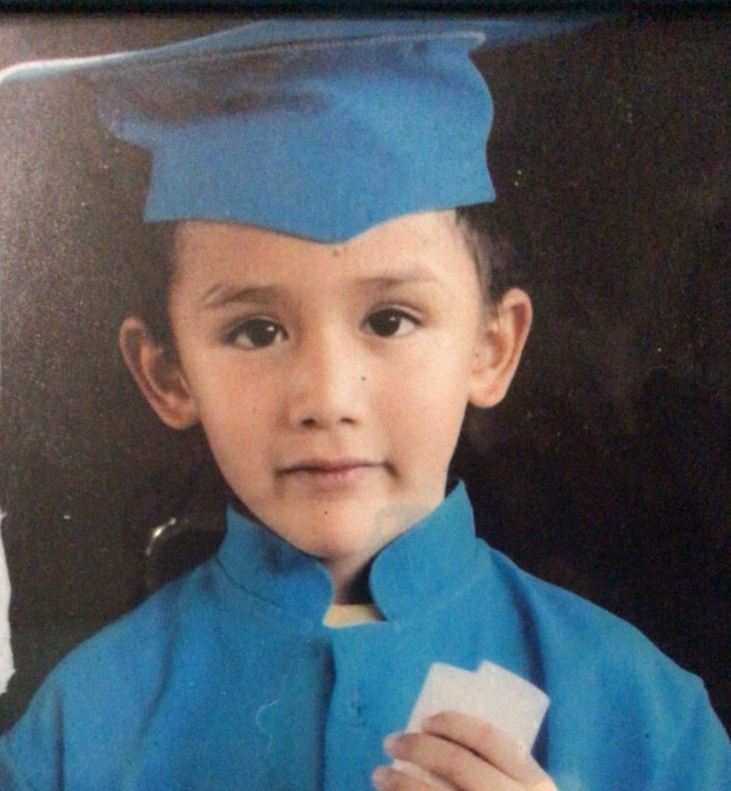
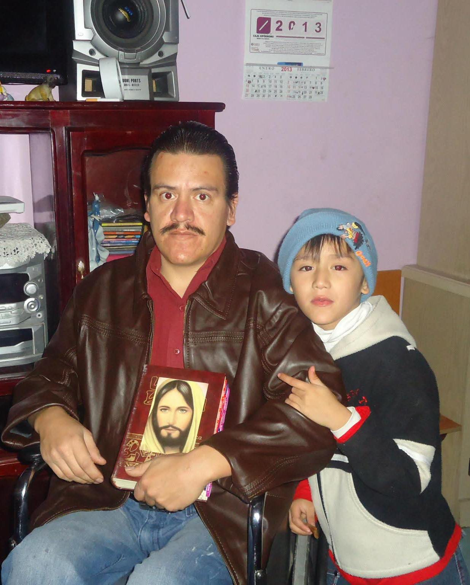
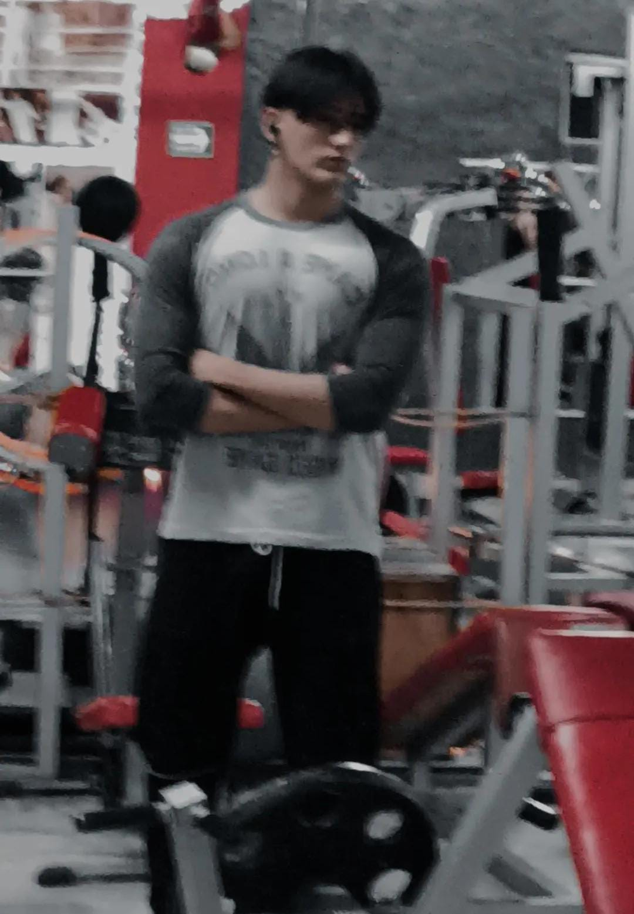
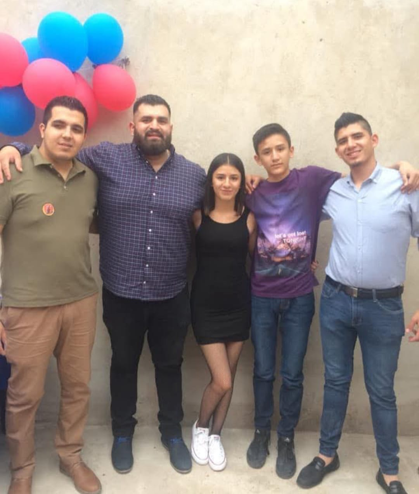

Mi nombre es Luis David Valdez Corral, nací el 10 de julio de 2005 y actualmente tengo 19 años. Estudio en la Universidad Politécnica de Durango, donde me esfuerzo día a día por construir un mejor futuro para mí y para mi familia.


Desde pequeño crecí en una gran familia, que me inculcó el valor del trabajo y la responsabilidad. Cuando tenía apenas seis años, mi padre sufrió un accidente que lo dejó parapléjico. Esta difícil situación marcó un antes y un después en mi vida, pero también fue una oportunidad para aprender. Desde muy joven adquirí habilidades como el cuidado básico de la salud, además de aprender a hacer compras, elegir bien los alimentos en el mercado y ayudar en casa.
Mis pasatiempos favoritos son ir al gimnasio, escuchar música y bailar. La música que escucho depende mucho de cómo me siento emocionalmente, aunque normalmente prefiero canciones de desamor. Lo que más me inspira en la vida es poder ayudar a mis padres, ya que en mi infancia vivimos muchas carencias, y mi mayor motivación es usar mi carrera como herramienta para cambiar nuestra situación económica. Ellos siempre han sido mi prioridad.

